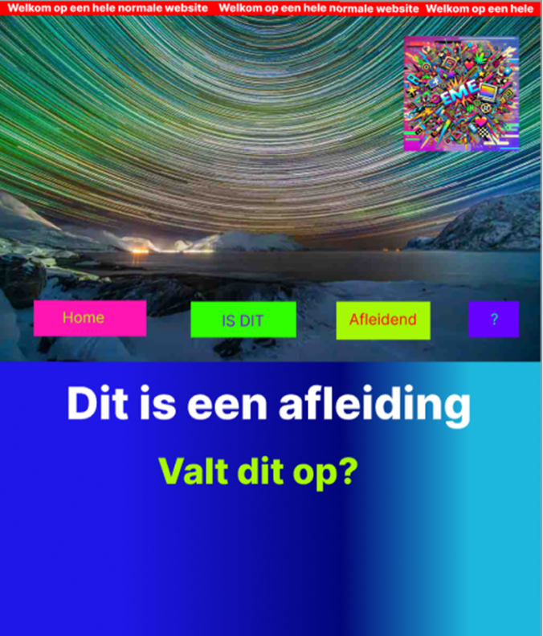
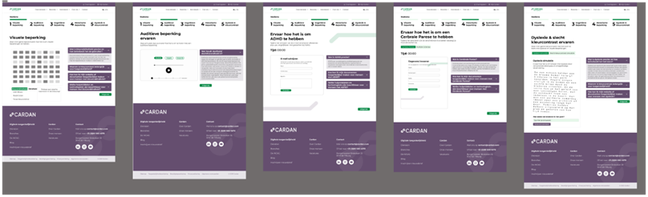
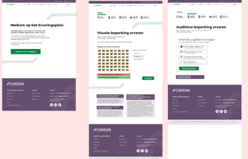

Branding project
Tijdens het branding project ben ik als eerste aan de slag gegaan met het onderzoek doen naar Boris en de doelgroep zelf. Deze staan in de onderstaande knoppen
We hebben voor dit project een brandguide gemaakt. Deze staat hieronder.
Brandguide
Brandtest
We hebben een brandtest uitgevoerd op de brandguide. Met als doel om te kijken of Boris hierin overkomt hoe wij bedacht dat hij overkomt. De test zijn hieronder te vinden. De resultaten hierop zijn dat het doel is behaald en Boris goed overkwam.
Conclusie (op basis van mijn test en die van anderen):
- De stylescape wordt als kalm en rustgevend ervaren.
- De albumcover straalt energie uit, maar minder het gevoel van ‘het onbekende’.
- Van de posters is de eerste vooral mysterieus, terwijl de tweede als energiek werd ervaren.
We nemen deze inzichten mee in de verdere ontwikkeling van de brandguide.
De kernwaarden die
altijd terug moeten komen zijn: energie en/of het onbekende.
UX project Cardan
Voor het UX project begon ik met het doen van een onderzoek naar 2 beperkingen
Dit onderzoek is beschikbaar in een document. Klik op de onderstaande knop om het te bekijken.
Prototype Cognitief
Mijn concept start met een visueel overweldigende pagina vol animaties en felle kleuren. Dit bootst de ervaring na van iemand met ADHD die wordt geconfronteerd met teveel prikkels. Onder aan de pagina staat een onopvallende knop die leidt naar een tweede, rustige pagina met de vraag: "Was de vorige pagina overweldigend?" Vervolgens wordt visueel uitgelegd hoe zelfs mooie animaties voor afleiding kunnen zorgen, en waarom het belangrijk is om bewust om te gaan met animaties in ontwerp.
Prototype Motorisch
De gebruiker doorloopt een mini-game waarin alleen genavigeerd kan worden met tab, shift-tab en enter. In de eerste versie zijn elementen slecht benoemd of visueel onduidelijk. Dit frustreert de gebruiker, die zich niet kan oriënteren. Daarna volgt een verbeterde versie met duidelijke focusindicatie en logische volgorde. De test maakt bewust wat het belang is van toegankelijke navigatie. Hieronder staat mijn process.
Feedback sprint 1 Carolina:
- De huisjes-opdracht werkte goed, maar zou realistischer zijn als simulatie
- Het typen onder tijdsdruk gaf goed de beperking weer
- Het idee om gebruikers gefrustreerd te maken en vervolgens empathie op te roepen, werd als sterk ervaren
- Carolina vond het leuk dat het verwerkt was als game
Maken van een nieuw prototype
Naar aanleiding van de feedback bedachten we een herkenbare setting: een website voor een fictieve luchtvaartmaatschappij "Cardan Airlines", waarbij bewust fouten zijn ingebouwd (slechte kleurencontrasten, veel afleiding, enz.). Mijn taak was de detailpagina van een vakantie te ontwerpen.
De link naar de Figma met de iteratiesMaken van een nieuw prototype
De Figma-prototype is getest via het Think Aloud-protocol met Noortje. Zij gaf aan dat sommige uitleg te lang was, waardoor ze instructies miste en niet verder kon. Dit wordt meegenomen in verdere iteraties.
Eindfeedback Carolina
Carolina vond het concept sterk, maar we hadden onszelf onnodig veel opgelegd. Het verwerken van alle beperkingen was niet nodig geweest. Ook gaf ze aan dat de instructies korter en duidelijker konden.
Development project
In het vervolg op de eerdere opdracht, het ontwerpen van een interactieve UX-ervaring rond de vijf fysieke stations van Cardan. Onze opdracht is het daadwerkelijk bouwen van deze digitale webapplicatie. We vertalen het gemaakte UX-ontwerp naar werkende code.
Orginele designs van Jarvins groep
Feedback van Carolina UX-project
Op auditieve na vond ze het heel leuk dat er een duidelijke opdracht is die de gebruiker moet doen. Bij auditieve zit er geen opdracht aan vast wat het minder sterk maakt en de gebruiker niet goed weet wat ze hier moeten doen. Daarnaast zitten de twee stukjes, opdracht en uitleg heel dicht op elkaar gepropt. Hiermee kan je goed variëren en kijken of het wel echt nodig is. Ook zou een soort van welkom pagina en eindpagina goed zijn om te hebben. Dan komt de gebruiker niet gelijk in de ervaring van een beperking.
Veranderingen na feedback
Toevoeging van een welkomstscherm en afsluitend scherm. Visuele en inhoudelijke herindeling van uitleg en opdracht.
UX test
Nadat we al enkele pagina’s hadden gecodeerd en een klein prototype hadden ontwikkeld, vonden we het een goed moment om een UX-test uit te voeren. Het volledige rapport is hieronder te vinden:
Eindversie
Na het doorvoeren van de aanpassingen hebben we een voorlopige eindversie ontwikkeld, die we vervolgens online hebben gezet op een server.
Link naar Live website: (nog niet beschikbaar)
Portfolio
Dit onderdeel is nog in ontwikkeling. Mijn portfolio-website is nog niet volledig afgerond en er is nog geen usertest uitgevoerd. In de komende periode wil ik de site verder afwerken en testen met gebruikers om feedback te verzamelen en verbeteringen door te voeren.